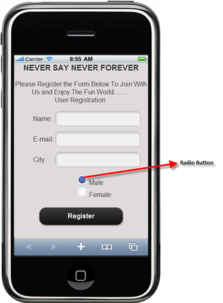

The RadioButton control is most widely used in form-based, real-time systems, such as in the case of picking one item from a group of items. The RadioButtonFor control is used to create radio buttons for a number of items in the same group if the items count is very large.
For example, a radio button is used to select the gender details in a registration form, and then used to select the Installation details while installing software.

Figure 222: Radio Button Use Case Sample